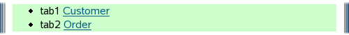
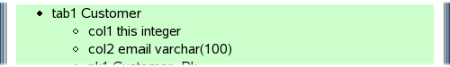
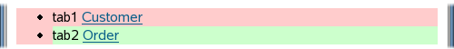
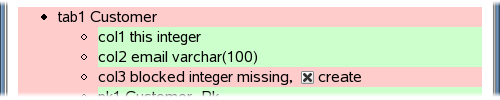
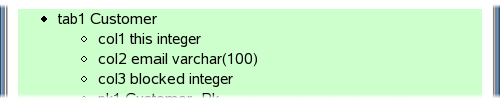
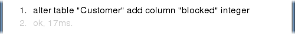

Schema Trail
The exedio console gathers various runtime information around the framework, such as cache statistics, connection pool, jdbc driver etc. This trail highlights it's schema evolution capabilities. It assumes that you have already deployed the exedio console into your web application.
Contents
Inspection
You may want to know first, which database schema is created by the framework. Open up the Console in your browser, select the Tabulator Schema, and you will see something like this:

The example model used to create this screenshot
contains two types Customer and Order.
Lets say, type Customer looks like this:
public class Customer extends Item
{
static final StringField email = new StringField().unique();
}
Now click on the table Customer to see the table details:
This shows you two columns:
-
An integer column
thisholding the primary key for implementing object identity. -
A string column
emailholding the value of the fieldemail.
Modification
Let's say you want to add a new field to your type:
public class Customer extends Item
{
static final StringField email = new StringField().unique();
static final BooleanField blocked = new BooleanField();
}
If you want to adjust the database schema
without loosing all your data,
you have to issue some SQL like
alter table Customer add column blocked integer.
The framework can do that for you,
but much more comfortable.
If you start up the new application containing the new field, the Schema looks like this:
The red color tells you, something is wrong with table Customer. Click on it for further details:
Again, the red color tells you, that something is wrong with column blocked. In fact it is just missing, as expected. At the end of the line there is a checkbox named create. Select it (already done in this screenshot) and push the button Apply further up the page. The next screen looks like this:
Column blocked does exist now, and therefore the red background turned to green. On the same page the sql statement sent to the database is logged:
In a similar way you may deal with dropped columns, changed column types, new tables, changed constraints etc. It's recommended to check for red color in the Schema tab, whenever deploying a new version of your application on an existing database schema. If everything is green, then there is a very little chance, that application and database schema don't fit to each other.
Revision
Now that you have some sql for revising your database to the new application version, you may want to reuse it for two purposes:
- Communicate it to your coworkers, so they can adapt their database, once they check out your modification from the source code repository.
- If there is already any production system, apply it to it, once your modification is deployed there.
static final Model model = new Model( Customer.TYPE, Order.TYPE);
Now insert a list of revisions with the first revision containing your sql command:
static final Model model = new Model( new Revisions( new Revision(1, "add flag blocked to customer", "alter table Customer add column blocked integer") ), Customer.TYPE, Order.TYPE);
So your sql command is executed, whenever your application starts up on a database, where revision 1 has not yet been applied. So this happens both on the systems of your coworkers and on the production system as well without any further action needed.
Of course you can have more than one revision, and each revision can consist of more than one sql command. Below the date of last modification is added to both types:
static final Model model = new Model( new Revisions( new Revision(2, "log last modification", "alter table Customer add column lastModified date", "alter table Order add column lastModified date"), new Revision(1, "add flag blocked to customer", "alter table Customer add column blocked integer") ), Customer.TYPE, Order.TYPE);
However, before you really can start with revisions, you have to do two one-time preparations:
- Make sure, that Model.revise() is called before you use the application. This method actually executes the sql commands when necessary. The best place for this call is immediately after connecting. If you already use the CopeFilter, you don't have do do anything, the filter calls Model.revise() for you.
-
exedio persistence stores the information about revisions already applied to
the database schema in an extra table named '
while'. Create this table with the exedio console, and make sure, this is done on the production system and the systems of your coworkers as well. It will be the last time, you have to do something like this manually.
Further Reading
After having a look at the exedio console, you may want to go back to exedio persistence itself.
- Searching Trail gives you an introduction into the searching capabilities of exedio persistence.
- Field Reloaded Trail covers all the more specific possibilities to store data.